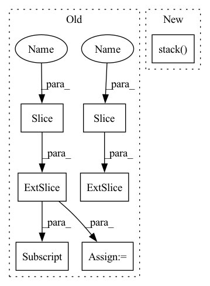

Pattern ID :33885
Before Change
batch_size = predictions.size(-1)
start_index = max(num_samples + batch_size - self._window_size, 0)
// Using `self.predictions =` will cause Pyre errors.
getattr(self, PREDICTIONS)[0] = torch.cat(
[
cast(torch.Tensor, getattr(self, PREDICTIONS)[0])[:, start_index:] ,
predictions,
],
dim=-1,
)
getattr(self, LABELS)[0] = torch.cat(
[cast (torch.Tensor, getattr(self, LABELS)[0])[:, start_index :], labels],
dim=-1,
)
getattr(self, WEIGHTS)[0] = torch.cat(After Change
batch_size = predictions.size(-1)
start_index = max(num_samples + batch_size - self._window_size, 0)
states = torch.stack( [predictions, labels, weights])
state = torch.cat([state[:, :, start_index:], states], dim=-1)
setattr(self, self._fused_name, state)
def _compute(self) -> List[MetricComputationReport]:In pattern: SUPERPATTERN
Frequency: 3
Non-data size: 7
Instances Fragment ID: 97144239
Project Name: facebookresearch/torchrec
Commit Name: df576fab294f27a11da2cc337c951b35210db8b4
Time: 2023-01-13
Author: renganxu@meta.com
File Name: torchrec/metrics/auc.py
M Class Name: AUCMetricComputation
N Class Name: AUCMetricComputation
M Method Name: update(1)
N Method Name: update(1)
M Parent Class: RecMetricComputation
N Parent Class: RecMetricComputation
M File Name: torchrec/metrics/auc.py
N File Name: torchrec/metrics/auc.py
M Start Line: 116
M End Line: 135
N Start Line: 104
N End Line: 114
Before Change
for i in range(1, num + 1):
start = piece_length * (i - 1)
end = piece_length * i
piece = spec[:, start:end]
if i == num:
piece = spec [:, start :]
freq(piece)
time(piece)After Change
return spec
else:
chunks = torch.split(spec, chunk_size, dim=1)
to_be_masked = torch.stack( list(chunks[:-1]), dim=0) .unsqueeze(1)
time_mask(to_be_masked)
freq_mask(to_be_masked)
masked = to_be_masked.squeeze(1).permute(1, 0, 2).reshape((spec.shape[0], -1)) Fragment ID: 97144255
Project Name: ivankunyankin/quartznet-asr
Commit Name: 28f999e7cfbefb66c9545f32e76a7454a7432aac
Time: 2021-07-01
Author: IKunyankin@gmail.com
File Name: utils.py
M Class Name: AnonimousClass
N Class Name: AnonimousClass
M Method Name: augment(4)
N Method Name: augment(4)
M Parent Class:
N Parent Class:
M File Name: utils.py
N File Name: utils.py
M Start Line: 57
M End Line: 82
N Start Line: 57
N End Line: 74
Before Change
weights = weights.double()
num_samples = getattr(self, PREDICTIONS)[0].size(-1)
batch_size = predictions.size(-1)
start_index = max(num_samples + batch_size - self._window_size, 0)
// Using `self.predictions =` will cause Pyre errors.
getattr(self, PREDICTIONS)[0] = torch.cat(
[
cast(torch.Tensor, getattr(self, PREDICTIONS)[0])[:, start_index:] ,
predictions,
],
dim=-1,
)
getattr(self, LABELS)[0] = torch.cat(
[cast (torch.Tensor, getattr(self, LABELS)[0])[:, start_index :], labels],
dim=-1,
)
getattr(self, WEIGHTS)[0] = torch.cat(After Change
batch_size = predictions.size(-1)
start_index = max(num_samples + batch_size - self._window_size, 0)
states = torch.stack( [predictions, labels, weights])
state = torch.cat([state[:, :, start_index:], states], dim=-1)
setattr(self, self._fused_name, state)
def _compute(self) -> List[MetricComputationReport]: Fragment ID: 97144256
Project Name: facebookresearch/torchrec
Commit Name: 50c861a4debb6d0d8bd55ddb27452e89f2d19d51
Time: 2022-12-03
Author: renganxu@meta.com
File Name: torchrec/metrics/auc.py
M Class Name: AUCMetricComputation
N Class Name: AUCMetricComputation
M Method Name: update(1)
N Method Name: update(1)
M Parent Class: RecMetricComputation
N Parent Class: RecMetricComputation
M File Name: torchrec/metrics/auc.py
N File Name: torchrec/metrics/auc.py
M Start Line: 116
M End Line: 135
N Start Line: 104
N End Line: 114